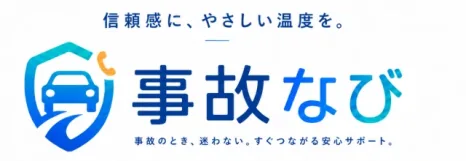

知識と誠実さで、 未来を変える。
株式会社Opus.netは、AI研修・導入支援から、交通事故被害者サポート「事故なび」、映像制作、業務システム開発、SNS・広告運用まで、人と企業の「困った」を解決へ導きます。

Company
Vision
信頼で社会を支える、
未来のインフラへ。
テクノロジーと専門知識を活かし、AI活用、交通事故被害者サポート、映像制作、業務システム開発、マーケティング支援といった分野で、人と企業の前進を支える存在を目指します。
企業情報をみるOur Value
誠実であること。
すべての判断と行動の基準は「正しいかどうか」。短期的な利益より、長期的な信頼を大切にします。
知識を磨き、活かすこと。
専門性を高め続け、正確な情報で人を支える。学びを止めず、社会に還元します。
変化を恐れず、挑戦すること。
社会が抱える課題に真摯に向き合い、創造的な発想で、より良い社会の実現を目指し続けます。
Service
AIの活用支援から、事故のあとのサポート、
映像・システム・集客まで手がけています。
生成AIの研修・導入支援と、交通事故に遭われた方を支える「事故なび」を軸に、企業の集客と業務を支えるサービスを提供しています。
AI活用支援
AI研修・導入支援
現場で実際に使えるところまで、研修から社内ルールの整備、日常業務への組み込みを伴走します。
交通事故サポート
事故なび
事故直後の不安に寄り添い、治療先の相談から修理の手配まで、必要なサポートへつなぎます。

クリエイティブ制作 映像制作 企画から撮影・編集まで、企業やサービスの魅力が伝わる動画をつくります。 自社プロダクト開発 業務システム開発 自社で運用してきた知見をもとに、CRMや業務効率化ツールを設計・開発します。 マーケティング支援 SNS・広告運用支援 企画・撮影・編集から広告運用、問い合わせにつながる導線設計まで一貫して支援します。AI活用支援の主力サービス
仕事で使えるAIラボ
本当に仕事で使えるところまで、毎月ひとつ実践する。
研修を受けて終わり、にしないための場所です。毎月の実務テーマと他社の事例を見ながら、自社の仕事を少しずつAIに置き換えていく継続型コミュニティを運営しています。